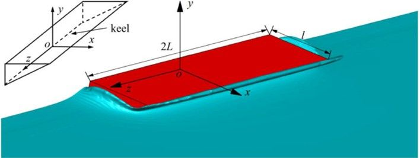

On the three-dimensional effects of the water entry of wedges

Abstract
Three-dimensional (3D) effects on the total and spanwise slamming coefficients and the pressure reductions acting on the wedge surface during water entry are modeled in a unified manner. First, the water entry of wedges with a constant speed is numerically studied using the finite volume method (FVM) combined with the volume of fluid (VOF) method. The wedge is assumed to enter water with high speeds such that the compressibility, viscosity, gravity and surface tension effects of the fluid can be neglected. The numerical method is validated against an experimental measurement of a freefall water entry of a wedge with a deadrise angle of 30°. Then, the water entry of 3D wedges with deadrise angles of 30, 35, 40 and 45° and beam-span ratios between the width and length varying from 0 to 1 are simulated. The total and spanwise slamming coefficients and the reduction of the pressure distribution are analyzed. The total slamming coefficient is derived with a 3D effect coefficient using a dimensional analysis in the slamming stage and its expression for the transition stage is proposed based on a two-dimensional (2D) transition stage model of the water entry. The spanwise slamming coefficients on the different spanwise sections are modeled with the pressure coefficient distribution of a supercavitating flow around a 2D flat plate. The reductions of the pressure acting on the wedge surface are found to be approximately constant along the wetted length for all spanwise sections, which can be derived using the expressions of the total and spanwise slamming coefficients. Finally, using the proposed model, the predictions of the abovementioned variables are in good agreement with the numerical simulation results in the slamming and transition stages during the water entry of the wedges with different deadrise angles and beam-span ratios.
Read the published article ↗